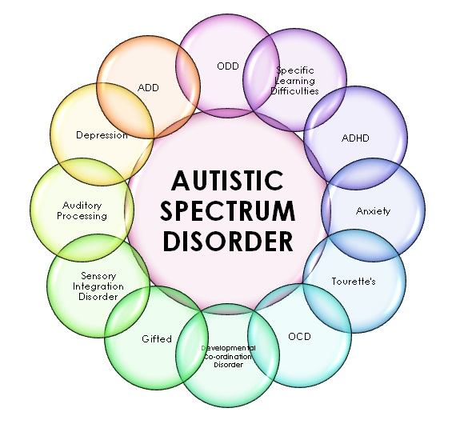

Autism spectrum disorder (ASD) is a developmental disability caused by differences in the brain. People with ASD often have problems with social communication and interaction, and restricted or repetitive behaviors or interests. People with ASD may also have different ways of learning, moving, or paying attention. It is important to note that some people without ASD might also have some of these symptoms. But for people with ASD, these characteristics can make life very challenging.
Diagnosing autism spectrum disorder (ASD) can be difficult because there is no medical test, like a blood test, to diagnose the disorder. Doctors look at the child’s developmental history and behavior to make a diagnosis. ASD can sometimes be detected at 18 months of age or younger. By age 2, a diagnosis by an experienced professional can be considered reliable [1]. However, many children do not receive a final diagnosis until much older. Some people are not diagnosed until they are adolescents or adults. This delay means that people with ASD might not get the early help they need. Diagnosing children with ASD as early as possible is important to make sure children receive the services and supports they need to reach their full potential [2]. There are several steps in this process.
Developmental monitoring is an active, ongoing process of watching a child grow and encouraging conversations between parents and providers about a child’s skills and abilities. Developmental monitoring involves observing how your child grows and whether your child meets the typical developmental milestones, or skills that most children reach by a certain age, in playing, learning, speaking, behaving, and moving. Parents, grandparents, early childhood education providers, and other caregivers can participate in developmental monitoring. CDC’s Learn the Signs. Act Early. program has developed free materials, including CDC’s Milestone Tracker app, to help parents and providers work together to monitor your child’s development and know when there might be a concern and if more screening is needed. You can use a brief checklist of milestones to see how your child is developing. If you notice that your child is not meeting milestones, talk with your doctor or nurse about your concerns and ask about developmental screening. Learn more about CDC Milestone Tracker app, milestone checklists, and other parent materials. When you take your child to a well visit, your doctor or nurse will also do developmental monitoring. The doctor or nurse might ask you questions about your child’s development or will talk and play with your child to see if they are developing and meeting milestones. Your doctor or nurse may also ask about your child’s family history. Be sure to let your doctor or nurse know about any conditions that your child’s family members have, including ASD, learning disorders, intellectual disability, or attention deficit/hyperactivity disorder (ADHD).
Developmental screening takes a closer look at how your child is developing. Developmental screening is more formal than developmental monitoring. It is a regular part of some well-child visits even if there is not a known concern. Screening questionnaires and checklists are based on research that compares your child to other children of the same age. Questions may ask about language, movement, and thinking skills, as a well as behaviors and emotions. Developmental screening can be done by a doctor or nurse, or other professionals in healthcare, community, or school settings. Your doctor may ask you to complete a questionnaire as part of the screening process. Screening at times other than the recommended ages should be done if you or your doctor have a concern. Additional screening should also be done if a child is at high risk for ASD (for example, having a sibling or other family member with ASD) or if behaviors sometimes associated with ASD are present. If your child’s healthcare provider does not periodically check your child with a developmental screening test, you can ask that it be done.
Recently in the research field, there is a high demand for automating processes to reduce the cost and time of any industry. Health care is one of the most important fields that would benefit from reducing processing time. The speed and efficiency of human health issues diagnostics is significant. The current diagnosing time is a huge challenge in many health conditions, especially Autism . It takes up to six months to firmly diagnose a child with autism due the long process, and a child must see many different specialists to diagnose autism, starting from developmental pediatricians, neurologists, psychiatrists or psychologists. The time consumed to finalize Autism diagnoses is relatively long in the current traditional way. Therefore, Machine Learning methods can make a significant change to accelerate the process. It is known that Early Intervention is the key for improving Autistic children . Clearly speeding the diagnosing time is even more crucial in Autism cases. Big data and machine learning technologies can make enormous progress to predict and speed up the complex and time-consuming processes of diagnosis and treatment .
A machine learning system can be developed to utilize a massive amount of health and medical data available towards predictive modeling and predictive analysis. In this research, a comparison of several machine learning techniques and models will be tested and analyzed. Data is pre-processed to make a prediction based on different categories into which test subjects are classified as Autistic . There are many existing classification algorithms that can be applied. Every classifier is diverse in its way of data accumulation, data filtering, feature extraction and employing these processes towards feeding the model to learn . A second stage is attempted to use machine learning algorithms to identify the most relevant diagnostic questions of a traditional Autism diagnostic questionnaire (AQ) using the extended version of the test containing fifty questions. In addition, we analyze the results to be used to further enhance Autism predictive models. The second stage of this research is very important for future research in the Autism diagnosis field. The model designed to check the questions relevancy can be used in many different ways. Once more data cis collected, this model can help to determine the child’s Autism severity in the scale. Further research with larger dataset would be very useful to improve the updating the Autism test questions based on outcome of this model after being fed larger amount of data which will lead to improvement is the Machine Learning process.
A brief test using a screening tool does not provide a diagnosis, but it can indicate whether a child is on the right development track or if a specialist should take a closer look. If the screening tool identifies an area of concern, a formal developmental evaluation may be needed. This formal evaluation is a more in-depth look at a child’s development and is usually done by a trained specialist such as a developmental pediatrician, child psychologist, speech-language pathologist, occupational therapist, or other specialist. The specialist may observe the child give the child a structured test, ask the parents or caregivers questions, or ask them to fill out questionnaires. The results of this formal evaluation highlight your child’s strengths and challenges and can inform whether they meet criteria for a developmental diagnosis. A diagnosis of ASD now includes several conditions that used to be diagnosed separately; autistic disorder, pervasive developmental disorder not otherwise specified (PDD-NOS), and Asperger syndrome. Your doctor or other healthcare provider can help you understand and navigate the diagnostic process.